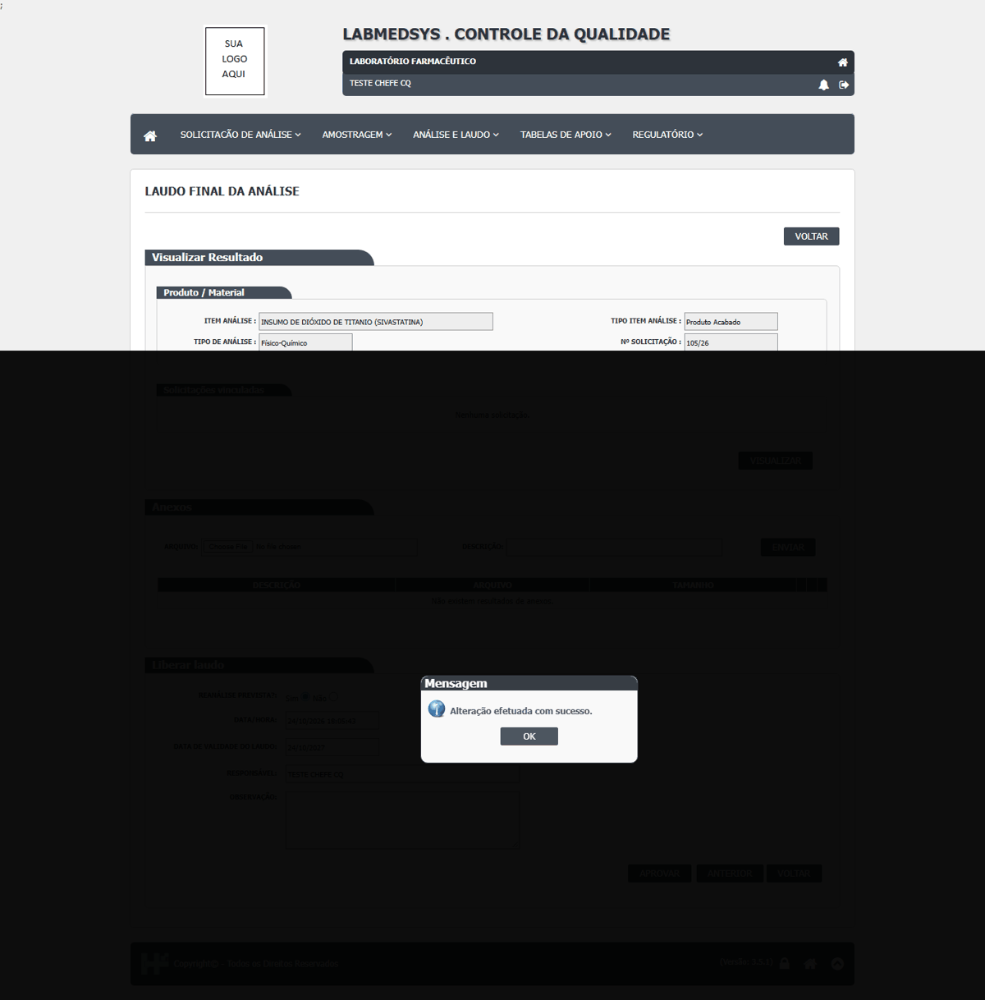
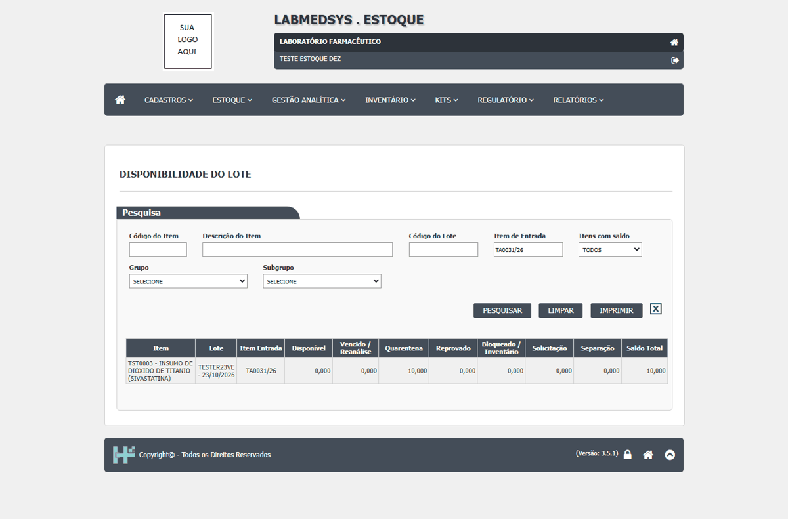
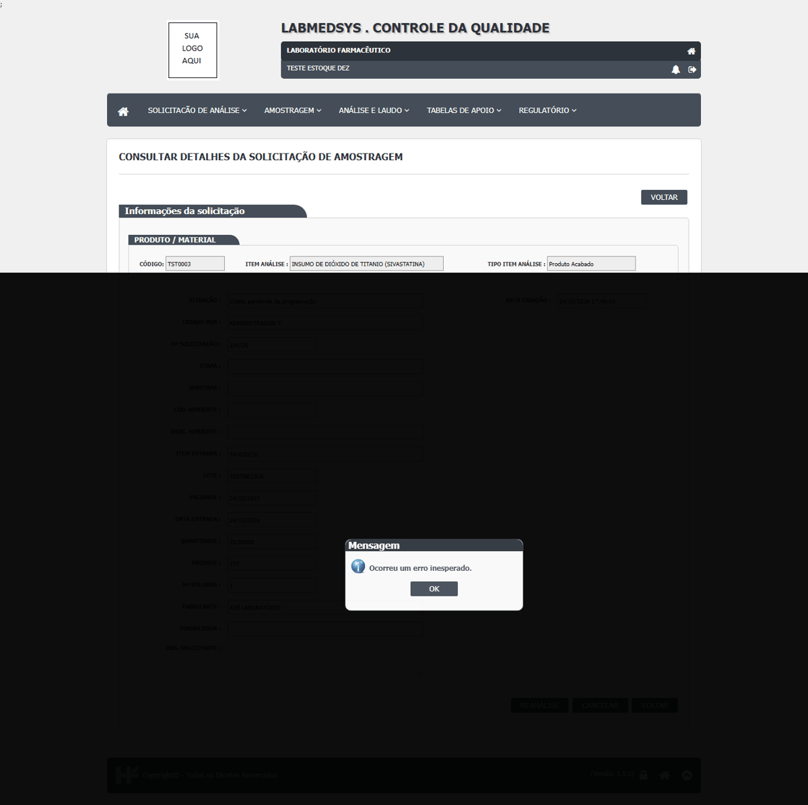
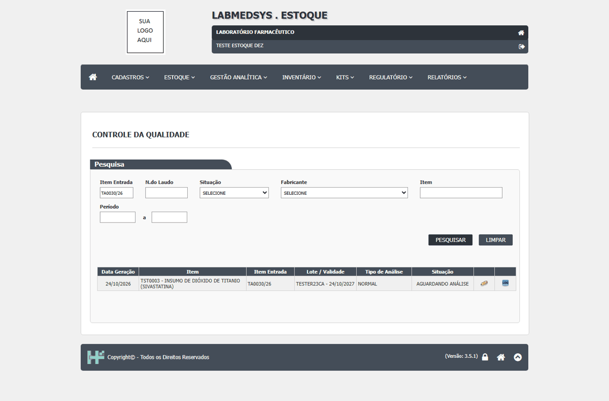
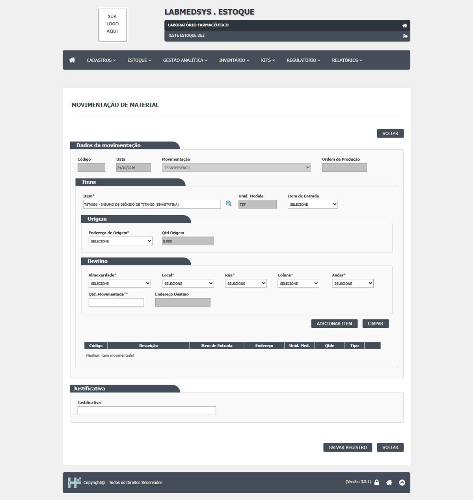

DV-EST-166 · A validade do laudo é editável e o laudo de lote vencido é aprovado com data futura; o lote vencido é liberado
O laudo traz a "Data de Validade do laudo" já preenchida com a do lote (**23/10/2026**, vencido) e a recusa corretamente ("A Data de Validade tem que ser maior ou igual a atual."). Mas o campo é **editável**: digitando **24/10/2027** o laudo foi aprovado, emitido e, depois de Atualizar Resultado e da Movimentação de Quarentena, o lote vencido foi para um local comum. A validade do laudo (2027) passou a ser maior que a do lote (2026). Na Disponibilidade do Lote, enquanto estava em quarentena a coluna "Vencido / Reanálise" era 0; só depois de liberado passou a 10 (com Disponível 0).
Como reproduzir o erro, passo a passo
- Dar entrada em um lote com validade de ontem (Entrada de Produção).
- Fazer a amostragem, a programação e a digitação da análise.
- Abrir o laudo, trocar a validade do laudo para uma data futura e Aprovar; Emitir Laudo.
- No Estoque: Atualizar Resultado e Movimentação de Quarentena; ler a Disponibilidade do Lote.
Esperado
Laudo de lote vencido recusado (ou liberado só como revalidação com justificativa); validade do laudo nunca maior que a do lote.
Obtido
Laudo aprovado com validade futura; lote vencido movido ao local comum.
Evidência (captura da tela)



DV-EST-171 · Laudo aprovado com "Reanálise prevista = Sim" aparece no Estoque como "Reanalisar? = NÃO", e a Agenda de Reanálise nunca lista lotes
O laudo do CQ traz a opção "Reanálise prevista" **marcada em Sim por padrão**. Aprovando o laudo do lote `TA0031/26` sem mexer nela, a análise do Estoque mostra **Reanalisar? = NÃO** (assim como em `TA0023/26` e `TA0026/26`). A Agenda de Reanálise, com período largo ou sem período, mostra só a linha fantasma. A cadeia "laudo com reanálise prevista, data, Agenda, agendamento" não se completa. *Não foi provado em que direção o valor se perde (inversão ou falta de repasse); só que o padrão Sim chega como NÃO.* **Conclusão da comparação código × tela (27/10/2026):** a Agenda não usa a classificação de reanálise do item (como o DV-EST-041 supunha em 13/10); a consulta filtra pela data de reanálise gravada no lote pelo laudo do CQ (dalItemLote.cs:1511) e exige "Reanalisar? = Sim" na última análise (dalItemLote.cs:1490), valores que o fechamento da análise grava (analise_controle_ed.aspx.cs:477 e 487). Como o laudo chega como "Reanalisar? = NÃO", nenhum lote satisfaz a condição e a Agenda nunca lista nada: a cadeia laudo → data de reanálise no lote → Agenda → agendamento nunca se completa e a tela não cumpre a função. A reanálise de matéria-prima dentro da data de reteste é exigência da RDC 658/2022 (art. 189). Relacionados: DV-EST-041 (primeira ocorrência do sintoma, 13/10/2026) e DV-EST-043 (classificação do item, que esta lista não usa).
Como reproduzir o erro, passo a passo
- No CQ, aprovar um laudo deixando "Reanálise prevista" como veio (Sim).
- Atualizar Resultado no Estoque e abrir a análise: ver "Reanalisar?".
- Abrir a Agenda de Reanálise com período largo e Pesquisar.
Esperado
Reanalisar? = SIM com data; o lote aparece na Agenda.
Obtido
Reanalisar? = NÃO; Agenda sem lotes.
Evidência (captura da tela)


DV-EST-029 · O Estoque só fica sabendo do laudo quando alguém clica em "Atualizar resultado"
Depois do laudo, o lote reprovado continua "Solicitado" no Estoque até alguém clicar em "Atualizar resultado". Depois de atualizado, o saldo mostra o mesmo material em **Quarentena 90 e Bloqueado 90** ao mesmo tempo.
Como reproduzir o erro, passo a passo
- Reprovar o laudo do TESTEPA998 no CQ.
- No Estoque, abrir Controle da Qualidade e ver a situação do lote.
- Clicar em Atualizar resultado e abrir a Disponibilidade do Lote.
Esperado
O laudo muda a situação do lote na hora, sem ninguém atualizar.
Obtido
Lote "Solicitado" até o clique; depois, saldo em quarentena e bloqueado juntos (a coluna Reprovado fica em 0).
Sem captura de tela registrada para este defeito.
DV-EST-169 · Cancelar a solicitação de análise no CQ não chega ao Estoque: o lote fica "Aguardando análise" e continua oferecido
Cancelei no CQ a solicitação 104/26 (lote `TESTER23CA`, em quarentena): o CQ mostrou "Confirma o cancelamento do item?" e **"Ocorreu um erro inesperado."**, mas a solicitação ficou **Cancelada** (mesmo padrão do DV-CQ-007). No Estoque a análise segue **AGUARDANDO ANÁLISE** (sem o botão Atualizar Resultado) e o lote continua sendo oferecido na Movimentação de Material. O código lido sugeria que o Estoque trataria cancelada como reprovada; na tela, o Estoque nem fica sabendo.
Como reproduzir o erro, passo a passo
- Dar entrada em um lote novo (solicitação de análise 104/26).
- No CQ, abrir a solicitação e Cancelar com justificativa.
- No Estoque, olhar Controle da Qualidade e a lista de lotes da Movimentação de Material.
Esperado
Análise cancelada visível no Estoque e o lote bloqueado, ou aguardando nova análise com aviso.
Obtido
Estoque inalterado; lote oferecido.
Evidência (captura da tela)


